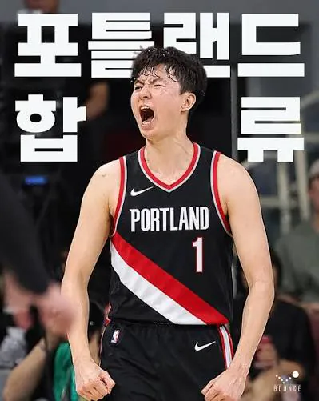
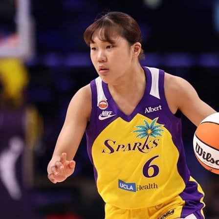
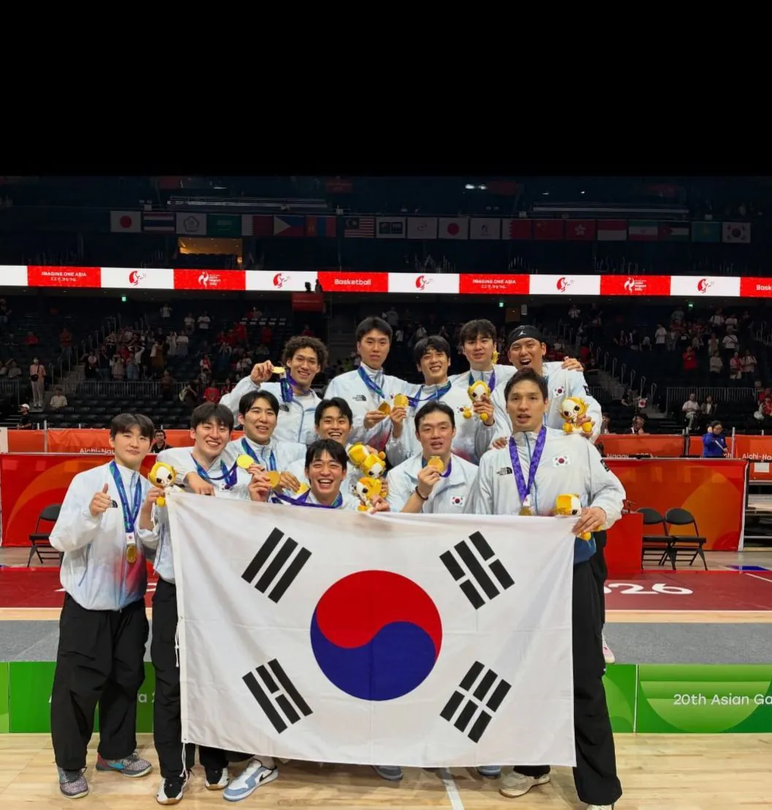
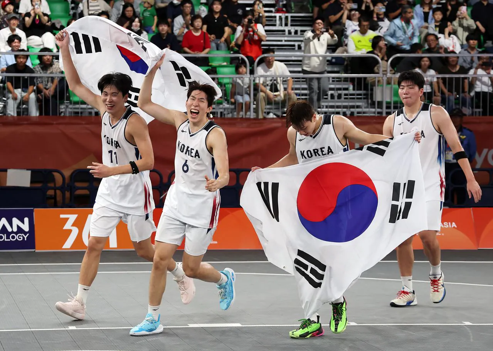
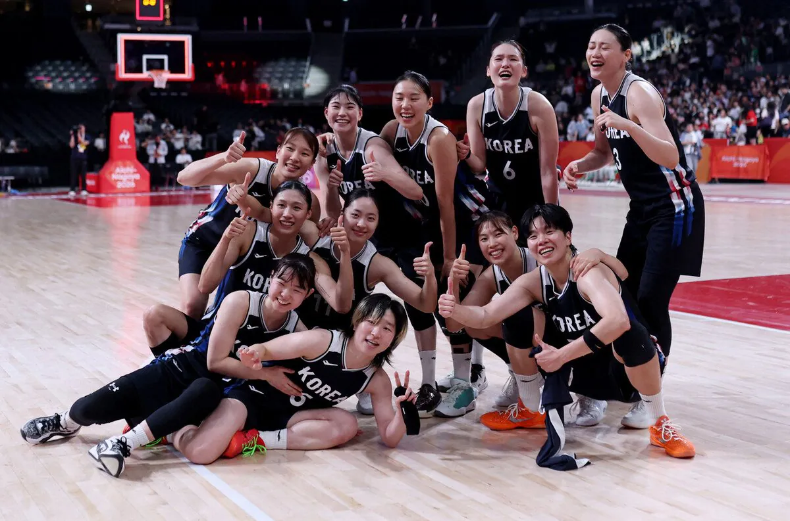
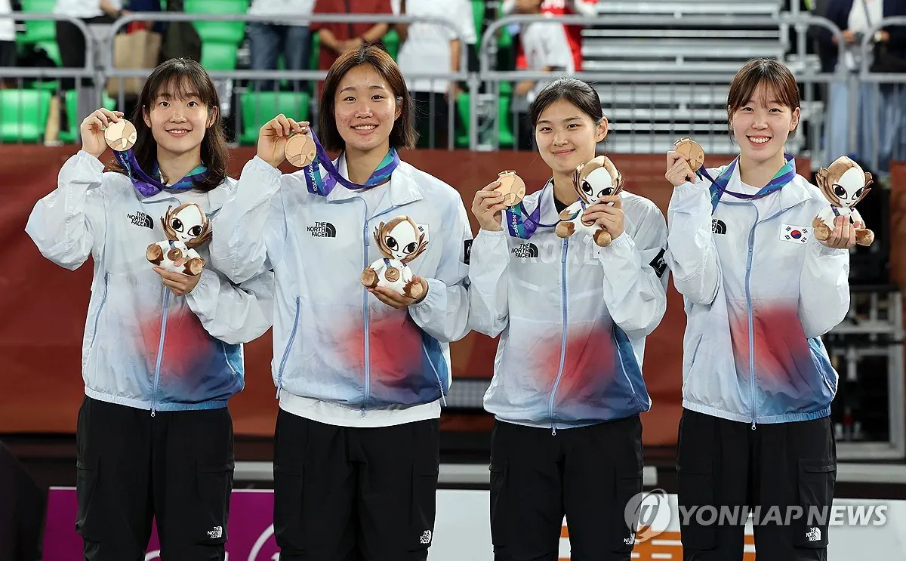

"이현중의 NBA 포틀랜드행"

"박지현의 WNBA LA 스파크스 입단"    
"남자농구 12년만에 금메달"
"올해 황금드랲세대 3ㄷ3 농구 금메달 군면제"
"여자농구도 12년만에 아시안게임 금메달"
"여자농구 3ㄷ3 동메달"
올해 한국농구 황금기의 시작이면 개추 ㅋㅋㅋㅋㅋ
동메달도 엄청잘한거지만 진짜 대기록쓸뻔했네 굿굿
이제 국농좀 잘해보자 판한번 갈아엎어야해